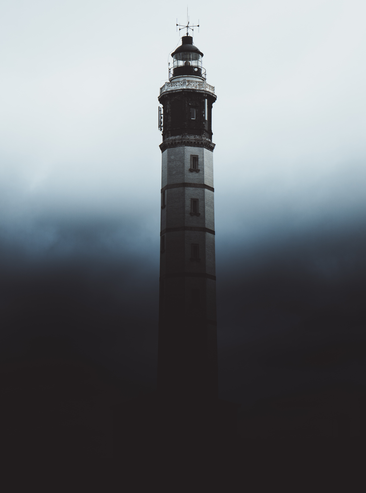

눈이 보이지 않는 S에게 세상은 다른 사람에 비해 좀 더 피곤한 편이었다. 인간에게서 가장 많이 활용되는 감각인 시각의 상실로 인해 다른 감각을 활용하여야 했다. 그러다보니 자연스럽게 다른 감각들이 발달하는 계기가 되었다. 예민하고 기민한 감각은 양날의 검처럼, S의 삶이 전보다 덜 불편하게 하면서 동시에 더욱 불편하게 만들었다. 그러나 싫다고 내칠 수도 없는 노릇. 살기 위해서는-특히나 테러리스트이자 수배범인 이상-더욱 갈고 닦아야만 했고, 그의 직업상 가끔은 생살을 찢고 부러진 뼈의 파편을 찾아 헤집기도 했다. 마취제는 다른 약에 비해 구하기 수월한 편이었다만 S는 극구 거부했다. 감각을 잃는 감각은 S에겐 독이나 마찬가지였으므로. 차라리 입에 수건을 물고 곰팡이 핀 천장을 쳐다보는 게 더 낫다고 말한 적도 있었다.
그런 S가 세계를 정복하려다 저 혼자 내뺀 이후로 몇 년, 그 동안 여러 변화가 있었다. S의 입장에서 말하자면 좋은 변화 중 하나는 스스로의 한계를 뛰어넘고 마인즈 아이라는 기술을 쓸 수 있게 된 것, 위험할 때 빠르게 내뺀다면 저의 기술을 따라올 자가 없다는 확신. 그에 따라오는 자만. 나쁜 변화는 자극이 강한 냄새가 아니라면 잘 맡기 힘들어졌다거나 예전이라면 금방 눈치챘을 위험을 감지하지 못하고 작은 위험에 맞닥뜨리거나 혹은 간발의 차로 피하는 일이 잦다는 것. 처음엔 그저 컨디션의 문제라고 생각했다. 비가 오는 날이면 가끔씩 이럴 때가 있었으니까. 초능력 또한 몸에서 나오는 에너지, 육신의 상태가 좋지 않으면 벌어지는 일이라는 걸 S는 그의 인생을 살아오면서 잘 알고 있었다.